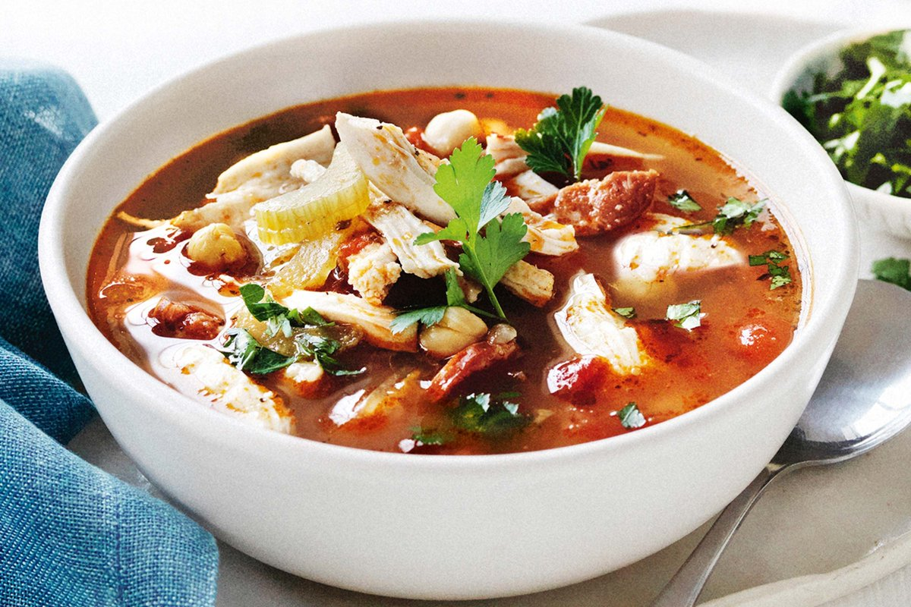

SOUP

The soup of the day is chicken soup. It is nutricious and healthy. Especially during the pandemic that has been
going on for a while now because all of us need stronger immune systems to fight against this disease.
Ingredients
- 1 tablespoon butter
- 1/2 cup diced carrot
- 1 cup diced onion
- 2 cups diced celery
- 1 pinch salt
- 2 quarts roasted chicken broth
Method
- Melt butter in a large soup pot over medium heat. Stir in carrot, onion, celery, salt, and fresh thyme. Stir in chicken fat; cook and stir until the onions turn soft and translucent, 5 to 6 minutes.
- Season to taste with salt, if necessary; stir in egg noodles and cook until tender, about 5 minutes.
- Stir in roasted chicken broth and bring to a boil.
- Stir in cooked chicken breast meat and simmer until heated through, about 5 minutes. Season with cayenne pepper, salt and black pepper to taste.
- Serve with garlic bread and white wine. Bon apetite:)